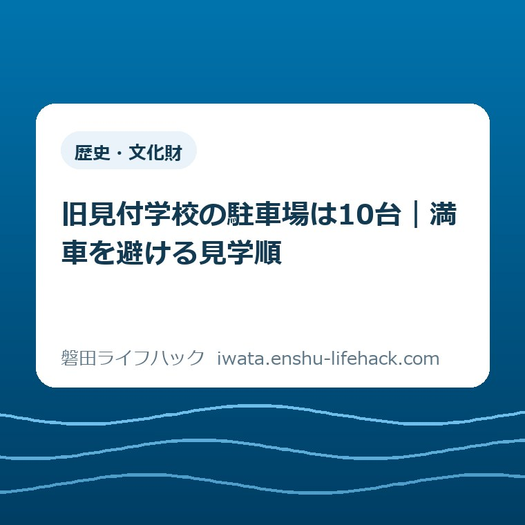

歴史・文化財
旧見付学校の駐車場は10台｜満車を避ける見学順

この記事の要点
Q. 旧見付学校へ車で行くなら、どんな順番で見学すればいい？
A. 駐車場は10台です。訪問直前に開館日を公式ページで確認し、駐車できたら旧見付学校を最初に見ます。満車なら周辺を回り続けず、施設へ確認するか別の予定へ切り替えてください。公認の代替駐車場は公式案内で確認できません。
旧見付学校の駐車場10台は、見学順を変える数字
旧見付学校へ初めて車で出かける家族が先に知るべき数字は、駐車場10台です。磐田市の施設ガイドに明記され、バスも駐車できると案内されています。
10台という数字は、駐車できる保証ではありません。普通車用の内訳、バスが来た場合の残り台数、満車になりやすい時間は公式ページに掲載されていません。
だからこそ、現地に着いてから考えるのではなく、出発前に順番を決めます。駐車できたら旧見付学校を先に見る。満車なら、近隣を回り続けない。この二つを家族で共有しておくだけで迷いが減ります。
私は、駐車場10台という数字を情報欄の飾りにしてはいけないと考えます。10台しかないなら、停められる前提で予定を詰めるな。これがこの記事の言い切りです。
開館直後の9時を到着目安にする方法はあります。ただし、9時なら必ず空いているという公表情報はありません。ここは提案と保証を分けて読んでください。
家族のお出かけでは、子どもの支度や休憩で時刻が動きます。到着が遅れたときも責め合わず、満車時の次の一手を決めておく方が現実的です。

磐田市公式ページで確認できる開館情報
磐田市の「施設ガイド 旧見付学校附磐田文庫」は、2026年6月29日に更新されています。所在地は磐田市見付2452-1です。
利用時間は火曜から日曜の午前9時から午後4時30分までです。この記事では24時間表記に直し、9時〜16時30分と記します。
休館日は原則として月曜です。ただし、月曜が国民の祝日または振替休日なら開館します。
国民の祝日の翌日も休館ですが、その日が土曜、日曜、月曜に当たる場合は火曜が休館になります。祝日の並びで例外が出るため、曜日だけで決めない方が安全です。
年末年始は12月29日から1月3日まで休館です。2026年内に訪ねる場合でも、臨時の案内が出ていないか訪問直前に公式ページを見てください。
駐車場は10台で、バス駐車可とされています。駐車料金、予約の可否、一般用と配慮が必要な方向けの区分は掲載されていません。
別の磐田市公式ページ「旧見付学校」では、入館料は無料と案内されています。利用時間と休館日の基本情報も同じページで確認できます。
旧見付学校は明治8年、1875年に建てられた校舎です。磐田市は、現存する日本最古の木造擬洋風小学校校舎と説明しています。
明治16年には3階部分を増築し、現在の5階建てになりました。館内は教育資料館として、明治期の授業風景や教員室の再現、教育・郷土史・民俗の資料を展示しています。
北側の磐田文庫とともに国の史跡です。駐車場の数だけを見ると小さな施設に感じますが、建物と敷地が伝える時間は151年に及びます。
ここが意外な事実です。車を停める枠は10台でも、見る対象は校舎一棟だけではありません。磐田文庫を含めて史跡として捉えると、着いてから慌てない見学順が要ります。
車で訪れる家族の見学順
車で訪れる家族の見学順は、出発前、到着時、見学後の三段階で組みます。最初の作業は、当日の開館状況を磐田市公式ページで確認することです。
祝日の翌日や連休に訪れる場合は、日付を読み上げながら家族で確認します。「月曜ではないから開いている」とだけ判断すると、火曜休館の例外を見落とす可能性があります。
次に、到着目安を決めます。私は開館時刻の9時を一つの基準にしますが、これは混雑回避を保証する数字ではありません。家族が無理なく出発できる時刻と合わせて決めます。
駐車できたら、旧見付学校を最初に見ます。先に別の場所へ寄って戻る形にすると、戻った時点の空き状況をもう一度気にしなければなりません。
校舎を見た後に磐田文庫へ進む順番なら、同じ史跡の中で時代と役割の違いをつなげて考えられます。館内の案内や職員の指示がある場合は、その案内を優先してください。
見学後の予定は、一つだけに絞らなくてかまいません。磐田市内の施設を探すなら、公共施設・図書館・公園を探す入口で候補を確認できます。図書館を次の候補にするなら、磐田市の図書館6施設の使い分けで、近い館と目的を照らし合わせてください。
見付地区を磐田市全体の中で捉えたい方は、磐田市の南北27.1キロと五つの地区を整理した記事も参考になります。市内という一語で距離を小さく見積もらないための記事です。
文化財を建物の中だけでなく土地から考えるなら、磐田市の埋蔵文化財届出を地番と地図から整理した記事へつながります。見える校舎と、地中に残る遺跡では、守り方も確認の入口も異なります。
満車なら、周辺を回り続けない
旧見付学校の駐車場が満車だった場合、公認の代替駐車場は磐田市の施設ガイドで確認できません。近いという理由だけで、別施設や店舗の駐車場を使えるとは判断できません。
路上で待つことや、出入口付近で同乗者を長く降ろすことも避けます。現地の表示と交通の状況に従い、安全に止まれる場所へ移動してください。
第一の選択は、旧見付学校へ電話で確認することです。問い合わせ先は0538-32-4511と案内されています。運転中の電話はせず、安全な場所へ移動してから同乗者が確認します。
第二の選択は、その日の見学順を切り替えることです。別の目的地を先にし、再訪するかどうかは施設の案内を聞いて決めます。
第三の選択は、別の日に公共交通で訪れることです。磐田市公式ページは、JR磐田駅から遠鉄バス31系統の「旧見付学校」停留所から徒歩1分と案内しています。
遠鉄バス80系統なら「新通町」停留所から徒歩5分、秋葉バスなら「旧見付学校」停留所から徒歩1分です。運行時刻や乗り場は訪問日の交通事業者案内で確かめてください。
駐車場一般の確認項目は、磐田市の施設へ車で出かける前の駐車場・アクセス確認にも整理しています。台数、入口、料金、利用時間を出発前に分けて見るための入口です。

評価——良い点を先に、注文したい点を後に
良い点は、駐車場が10台であることを磐田市が数字で示している点です。「駐車場あり」だけでは、家族は現地で使える規模を想像できません。
バス駐車可という情報も、団体利用を考える側には助かります。利用時間、休館日、住所、電話番号、公共交通まで一つの施設ガイドにまとまっています。
もう一つの良い点は、入館無料と公式ページで確認できることです。家族の人数で料金が増えないと分かれば、短時間でも立ち寄る判断がしやすくなります。
その上で、注文したい点があります。満車時に使える公認の代替駐車場がないのか、あるならどこかを、施設ガイドに一文で示してほしいと私は思います。
10台という数字は出ていますが、車種別の内訳とバス利用時の扱いは分かりません。団体利用と家族の車が重なる日の考え方も、現地に行く側には欲しい情報です。
これは職員個人への不満ではありません。公開情報の並べ方への、一利用者、一事業者としての注文です。分からない点は分からないまま残し、現地へ行く人が確認できる形にするのが筋です。
対案・結論——到着前に三つだけ決める
旧見付学校へ車で行く前に決めることは三つです。当日の開館確認、到着目安、満車時の次の予定です。
一つ目は、磐田市公式ページを訪問当日に開くことです。休館日の例外があるため、曜日だけでなく年月日で確認します。
二つ目は、到着目安を家族で共有することです。9時を基準にしてもよいですが、空きを保証する時刻ではないと全員が理解しておきます。
三つ目は、満車なら周辺を探し回らないと決めることです。電話確認、別の予定、公共交通での再訪という順に選択肢を持ちます。
この三つを書いたメモを車内に置けば、現地で判断が割れにくくなります。運転する人に検索や電話を任せず、同乗者が案内を担当してください。
- 訪問当日、磐田市公式ページで開館状況と9時〜16時30分の利用時間を確認する。
- 駐車場10台を前提に、駐車できたら旧見付学校を最初に見る。
- 満車なら路上待機や無断駐車をせず、安全な場所へ移動する。
- 旧見付学校へ確認するか、次の目的地へ切り替える。
- 確実性が必要なら、公共交通での再訪も家族の選択肢に残す。
家族で決める車内の役割
家族で車を使う日は、運転する人と案内を確認する人を分けます。運転する人が入口を探しながらスマートフォンを見る状態は避けなければなりません。
案内役は、公式ページ、施設の電話番号、次の目的地を一画面か一枚のメモにまとめます。検索結果の一覧ではなく、磐田市公式ページそのものを開いておきます。
子どもと一緒なら、駐車できるまでシートベルトを外さないことも先に伝えます。建物が見えた瞬間に降りる準備を始めると、運転する側の注意が分散します。
高齢の家族と一緒なら、歩ける距離や休憩の必要性を出発前に聞きます。ただし、館内の階段や移動支援の状況は今回確認できていません。必要な配慮は施設へ直接尋ねてください。
満車時に予定を変える役は、運転者ではなく同乗者が担います。候補を二つ用意しても、車内で選ぶのは一つだけにすると、次の移動が早く決まります。
一人で運転して訪れる場合は、安全に停車してから確認します。入口付近で迷ったまま操作せず、いったん離れる判断を最初から予定に含めます。
再訪を選んでも、失敗ではありません。151年前に建てられた校舎を見る予定を、駐車できなかった一度だけで諦める必要はありません。公共交通という別の行き方も残っています。
施設の情報は個別条件や当日の状況で変わります。家族で決めるのは現地のルールではなく、自分たちが安全に動く順番です。最後の確認は必ず磐田市公式ページと施設の案内に戻してください。
大石の視点——10台を家族の手間へ翻訳する
ここからは公表情報ではなく、大石浩之（磐田市／不動産業）としての意見です。今回の体験ストックに旧見付学校の駐車場で起きた実話はありません。見ていない混雑を見たようには書きません。
私は不動産の仕事で、数字を持ち主の手間へ置き換えて考えます。駐車場10台なら、11台目になる可能性を先に予定へ入れる。たったそれだけで、現地の迷いはかなり減ります。
一方で、私は迷いも残ります。代替駐車場が公式ページにない以上、車で行く家族へどこまで具体的な案内を出せるかは難しいところです。未確認の場所を便利そうだからと勧める方が危ないと判断しました。
市民や見学者は、開館日を調べ、家族の支度を整え、運転して現地へ向かいます。すでにそれだけの手間を払っています。現地で迷わせない情報は、施設の価値と同じくらい暮らしには効きます。
今日できる一歩は、訪問予定日を決めることではありません。まず公式ページを家族の共有先へ送り、満車時の次の予定を一つだけ決めてください。
FAQ——旧見付学校の駐車場と開館日の確認
旧見付学校の駐車場は何台ですか。
磐田市の施設ガイドは駐車場10台、バス駐車可と案内しています。普通車とバスの使用区分や、バス駐車時に普通車が何台停められるかは掲載されていません。台数は変わる可能性があるため、団体利用や確実性が必要な場合は旧見付学校へ事前に確認してください。
旧見付学校の開館時間と休館日はいつですか。
利用時間は火曜から日曜の9時〜16時30分です。原則月曜休館ですが、月曜が祝日または振替休日なら開館します。祝日の翌日の扱いにも曜日による例外があり、年末年始は12月29日〜1月3日が休館です。訪問日は磐田市公式ページで確認してください。
旧見付学校の駐車場が満車なら、どこに停めればよいですか。
磐田市の施設ガイドには、満車時に使える公認の代替駐車場が掲載されていません。近隣施設や路上へ自己判断で停めず、旧見付学校へ確認するか、その日の見学順を切り替えてください。JR磐田駅から路線バスを使う行き方も公式ページに掲載されています。
今日持ち帰る確認事項
旧見付学校は、駐車場10台、利用時間9時〜16時30分、入館無料です。休館日は祝日との組み合わせで例外があるため、訪問日の公式確認が欠かせません。
駐車できたら旧見付学校を最初に見る。満車なら周辺を回り続けず、施設への確認か予定変更へ進む。この見学順なら、10台という数字を家族の段取りに変えられます。
- 駐車場は10台でバス駐車可。車種別の内訳は公式ページに記載がない。
- 火曜〜日曜の9時〜16時30分、入館無料。休館日の例外は訪問日で確認する。
- 満車時の公認代替駐車場は未確認。無断駐車をせず、電話確認か予定変更を選ぶ。
参考にした公式情報
- 施設ガイド 旧見付学校附磐田文庫／磐田市（2026年9月2日確認・ページ更新日2026年6月29日）
- 旧見付学校／磐田市（2026年9月2日確認・ページ更新日2026年3月10日）
- 史跡旧見付学校附磐田文庫保存活用計画／磐田市（2026年9月2日確認・ページ更新日2026年2月5日）

最終確認日：2026-09-02 ／ 本記事は公表情報と執筆者の見解を分けて記載しています。施設情報・数値・公開状況は変更される場合があります。個別条件は異なるため、訪問前に必ず磐田市公式ページまたは旧見付学校へご確認ください。